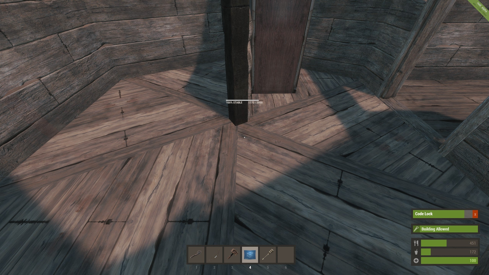
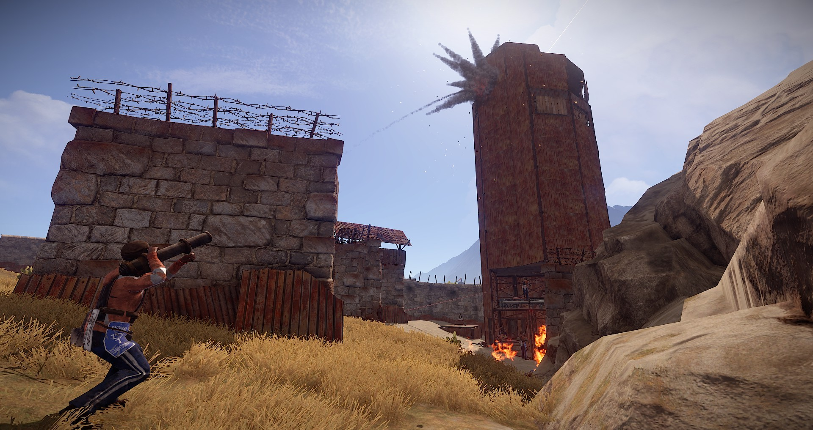
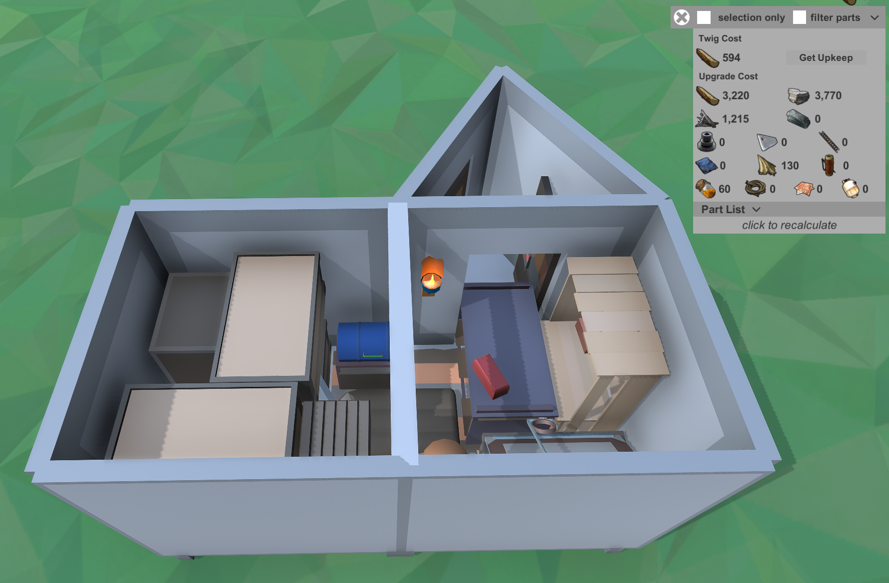
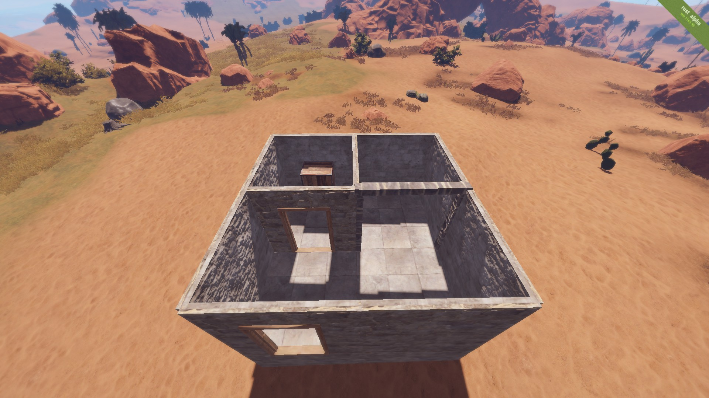
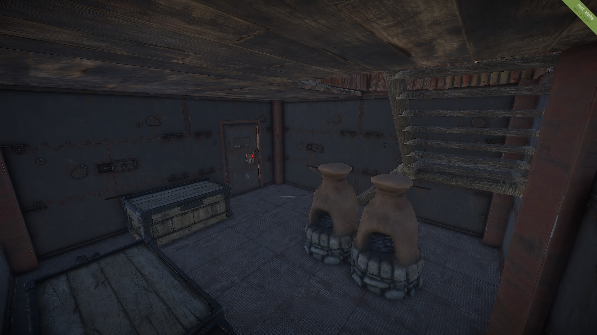
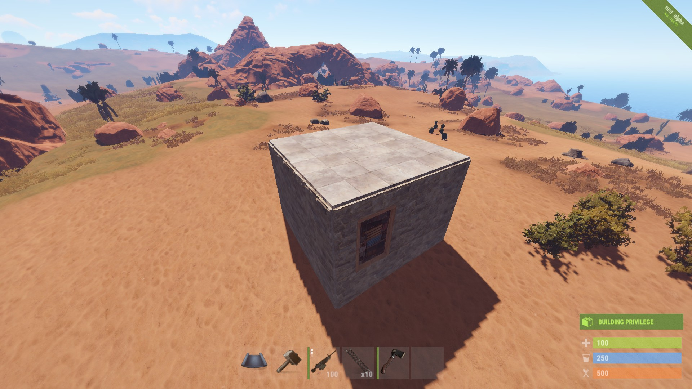

 Wood is the first material that be used to build a base. It provides a small amount of protection but can be destroyed very easily. Upgrading to Wood Tier is mostly only useful in the Early Game, as it is relatively cost-effective and provides a degree of protection. It is, however, strongly recommended to upgrade Wood Tier structures to a higher Tier as soon as possible.
 Sheet Metal is Most optimal and readily available option, in terms of cost/performance ratio, that a player can have access to. Sheet Metal Tier components require roughly half the amount of raw materials that Stone Tier does, however, they need to be processed and smelted in a Furnace first.
The 2x1 is the smallest base you should build. It is cheap and easy to setup and is the perfect first base to build if you are with a small amount of people. Important additions to the two square foundations is the triangle foundation next to the entrance to create an airlock which is a way to stop enemys from getting into your base. 
 Stone Tier components have 500 health and are invulnerable to damage inflicted by fire, most tools and regular projectiles. They are, however, susceptible to high explosive damage, such as C4 or Rockets. They can also be damaged by Metal Pickaxes and other melee weapons on the soft side. Upgrading to Stone Tier is particularly useful during Early to Mid Game as the raw materials needed are relatively abundant and do not require any additional processing.
 Armored is the highest tier that a building block can be upgraded to and requires high quality metal to build and upkeep. High quality metal is a highly valuble and rare material so very few parts of a base should be Armoured. Building are usually only upgraded to armoured if there is no other walls protecting them.
The 2x2 is another basic base but it has more space and customisation which allows it to be used by bigger groups and allows for more iems to be stored.
